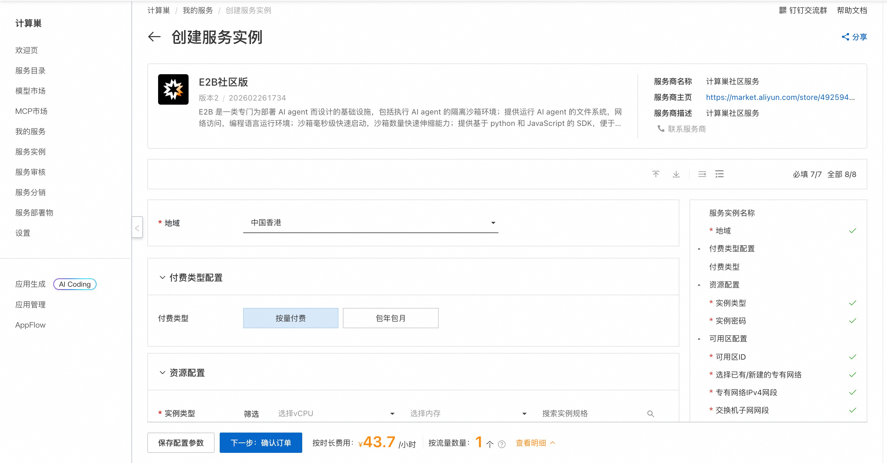
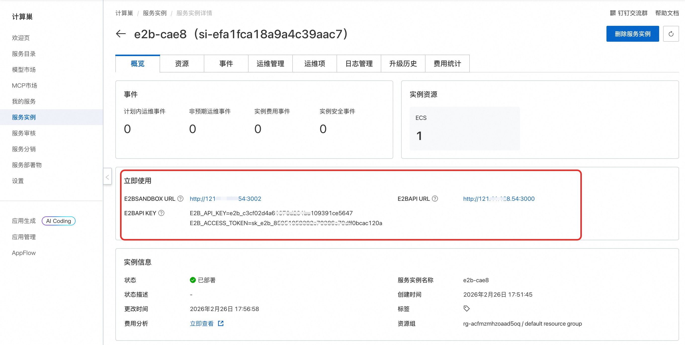
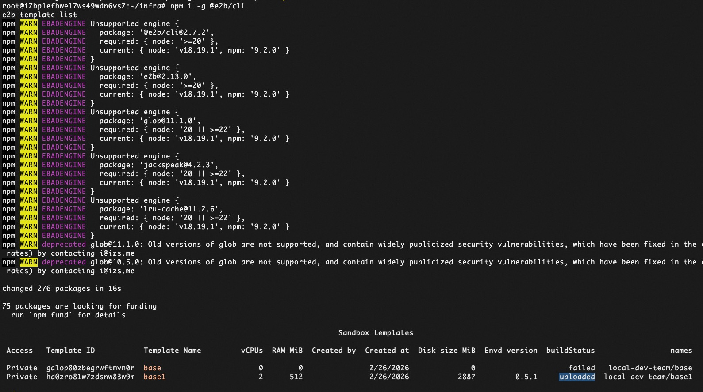

🌟 服务简介
E2B 社区版版是一个免费、开源的本地化代码执行引擎，适用于 LLM 智能体开发、自动化脚本测试、教育实验等场景。通过简洁的 Web 控制台或 RESTful API，用户可快速创建沙箱实例、上传文件、执行命令，并实时查看输出结果，所有操作均在容器级隔离环境中完成，保障主机系统安全。
🚀 部署流程
1. 一键创建实例
访问 计算巢 E2B 社区版部署页，按页面提示填写基础参数：

2. 确认资源配置
系统将自动生成费用预估明细。确认后点击 下一步：确认订单。在订单确认页核对信息无误，点击 立即创建。
3. 获取访问地址
部署完成后，在控制台查看 E2B 访问地址：

4. 开始使用
首次使用需远程连接ECS，执行以下命令创建沙箱：
sudo su
cd /root/infra
make -C packages/shared/scripts local-build-base-template
沙箱创建完成后执行命令验证沙箱是否正常工作：
npm i -g @e2b/cli
e2b template list

📚 使用指南
- 官方文档：E2B 官方文档（含沙箱 API、Python SDK、智能体集成示例）
© 2009-2022 Aliyun.com 版权所有